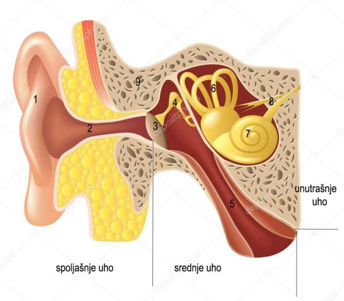
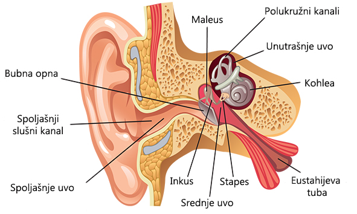

Pomoću čula sluha registrujemo zvučne signale.
Pomoću čula ravnoteže održavamo ravnotežu.
Kod riba je ovo čulo smešteno u bočnoj liniji.
Kod suvozemnih životinja u unutrašnjem uhu.
Receptori su mehanoreceptori (registruju promene pritiska vazduha ili vodene mase).
U srednje uho se uliva jedan kratki kanal koji ga povezuje sa ždrelom i poznat je pod nazivom Eustahijeva tuba. Važan je za izjednačavanje pritiska vazduha u srednjem uhu i spoljašnjoj sredini, odnosno sa obe strane bubne opne.
Kortijev organ je u unutrašnjosti jednog od tri kanala puža. Ta tri kanala su ispunjena tečnošću. Zvučni talasi se sa koščica prenose na puž, njegovi zidovi vibriraju što pokreće tečnost u njegovoj unutrašnjosti. Ta tečnost nadražuje trepljaste ćelije – mehanoreceptore i nadražaj se prenosi do mozga.
 Zvučni talasi ulaze kroz spoljni ušni kanal i pogadaju bubnu opnu, izazivajući njeno
vibriranje.
Na unutrašnjoj strani bubne opne nalaze se tri sićušne koščice — čekić,
nakovanj i uzengija.
Vibracije membrane prenose se na te kosti, koje sa svoje strane
vibriraju i prenose impulse unutrašnjem uhu.
U unutrašnjem uhu je puž sa Kortijevim
organom.
Impulsi zatim putuju od nervnih završetaka do slušnog nerva (živca) koji ih
prenosi mozgu, gde se registruju kao ono što čujemo.
Pri pokretu glave ili bilo kom drugom, pri promeni brzine kretanja dolazi do talasanja tečnosti (limfe) u unutrašnjem uhu i polukružnim kanalićima. Polukružni kanalići postavljeni u tri različite ravni. Pomeranje tela u bilo kom pravcu (gore-dole, levo-desno, napred-nazad) nadražuje treplje receptora za ravnotežu. Nadražaj se prenosi vlaknima nerva za ravnotežu do centra u mozgu